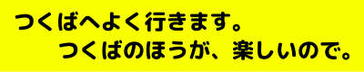
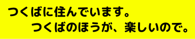
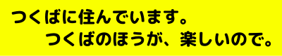

つくば大好き連合
つくばによく行く方のためのバナー
つくばに住んでいるのためのバナー
ぜひ、勝手に適当に持って行ってください
元ネタ :
筑波信者いた pic.twitter.com/IwO8kXINLa
— ベア (@bear_wash9663) November 24, 2024
TODO ジェネレーターを作る
つくばによく行く方のためのバナー
つくばに住んでいるのためのバナー
ぜひ、勝手に適当に持って行ってください
筑波信者いた pic.twitter.com/IwO8kXINLa
— ベア (@bear_wash9663) November 24, 2024
TODO ジェネレーターを作る